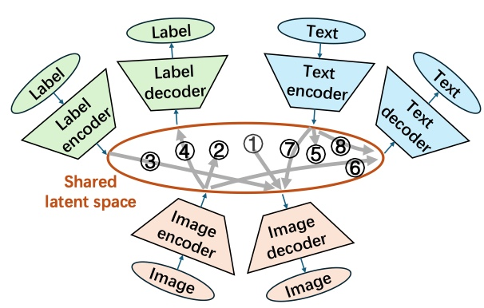

Latent Zoning Network: A Unified Principle for Generative Modeling, Representation Learning, and Classification
NeurIPS 2025Conference on Neural Information Processing Systems

In brief
LZN asks whether one principle can unify generative modeling, representation learning, and classification: a shared Gaussian latent space in which each data type (images, text, labels) has an encoder mapping samples to disjoint latent zones and a decoder mapping back, so that tasks become compositions of encoders and decoders. Plugged into Rectified Flow it improves image generation; on its own it beats MoCo and SimCLR on ImageNet linear classification; and trained jointly, generation and classification each make the other better.
Key takeaways
- Everything rests on two atomic operations: latent computation, where flow matching partitions a Gaussian latent space into disjoint per-sample zones, and latent alignment, a soft differentiable approximation of the discrete latent-to-anchor assignment.
- Used as a drop-in extra condition for Rectified Flow — without modifying the training objective — LZN improves generation on CIFAR10 (FID 2.76 to 2.59), AFHQ-Cat, CelebA-HQ and LSUN-Bedroom, and closes 59% of the FID gap between unconditional and conditional generation.
- Representation learning without contrastive loss: disjoint latent zones prevent collapse by design (no memory banks or architectural tricks), outperforming MoCo by 9.3% and SimCLR by 0.2% on ImageNet linear classification.
- Joint generation + classification beats training either task alone — conditional FID improves to 2.40 and classification reaches 94.5% on CIFAR10 — direct evidence that tasks can help each other through a shared latent space.
- Orthogonal to AR transformers and diffusion models rather than competing: any generative model can serve as an LZN decoder.
Abstract
Generative modeling, representation learning, and classification are three core problems in machine learning (ML), yet their state-of-the-art (SoTA) solutions remain largely disjoint. In this paper, we ask: Can a unified principle address all three? Such unification could simplify ML pipelines and foster greater synergy across tasks. We introduce Latent Zoning Network (LZN) as a step toward this goal. At its core, LZN creates a shared Gaussian latent space that encodes information across all tasks. Each data type (e.g., images, text, labels) is equipped with an encoder that maps samples to disjoint latent zones, and a decoder that maps latents back to data. ML tasks are expressed as compositions of these encoders and decoders: for example, label-conditional image generation uses a label encoder and image decoder; image embedding uses an image encoder; classification uses an image encoder and label decoder. We demonstrate the promise of LZN in three increasingly complex scenarios: (1) LZN can enhance existing models (image generation): When combined with the SoTA Rectified Flow model, LZN improves FID on CIFAR10 from 2.76 to 2.59 without modifying the training objective. (2) LZN can solve tasks independently (representation learning): LZN can implement unsupervised representation learning without auxiliary loss functions, outperforming the seminal MoCo and SimCLR methods by 9.3% and 0.2%, respectively, on downstream linear classification on ImageNet. (3) LZN can solve multiple tasks simultaneously (joint generation and classification): With image and label encoders/decoders, LZN performs both tasks jointly by design, improving FID and achieving SoTA classification accuracy on CIFAR10.
BibTeX
@inproceedings{zhu_lzn,
title = {Latent Zoning Network: A Unified Principle for Generative Modeling, Representation Learning, and Classification},
author = {Lin, Zinan and Liu, Enshu and Ning, Xuefei and Zhu, Junyi and Wang, Wenyu and Yekhanin, Sergey},
year = {2025},
booktitle = {Conference on Neural Information Processing Systems},
url = {https://arxiv.org/abs/2509.15591},
}